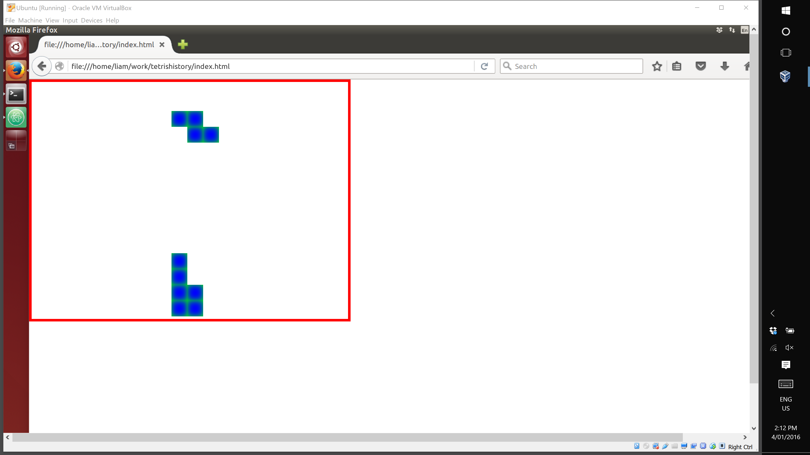

In the previous article we introduced Redux for managing the user interface state and added some rudimentary animation.
In this addition we will refactor the application models and introduce some testing.
To follow along with this article checkout the commit b01c12d.
$ git clone https://github.com/liammclennan/tetris.git
$ npm install
$ git checkout b01c12d
Fixing the Model
At this point in the implementation it is time to start thinking about the logic of Tetris and how we will implement things like collision detection, boundaries and collapsing rows. This is stuff that I don’t want in my React components because it is application logic that should be a core part of my application.
I have made a mistake with my domain modelling by representing the different Tetrominos as different types, when in fact they only need to be different configurations of the same type (Shape).
Also, I have come to the realization that a Tetrominos is not a set of points with a standard orientation that can be rotated. It is better to think of a Tetromino as a set of rotations of a shape (I call the rotations N, S, E and W).
The ‘Shape’ Type
A ‘Shape’ is a kind of Tetromino. It has a name and a function that returns the shape’s points given a rotation.
// a tetromino
export class Shape {
constructor(name, rotator) {
this.name = name;
this.rotator = rotator;
}
pointsRotated(rotation) {
return this.rotator(rotation);
}
}
With the Shape type we can now fully define all possible rotations of all possible Tetrominos. I put them in a dictionary so that I can easily access the one I want (e.g. shapes['Z']):
// dictionary of shape type to square offsets
export var shapes = {
'O': new Shape('O', rotation => [new Point(1,1),new Point(1,2), new Point(2,1),new Point(2,2)]),
'I': new Shape('I', rotation => {
switch (rotation) {
case 'N': return [new Point(1,1), new Point(2,1),new Point(3,1), new Point(4,1)];
case 'E': return [new Point(2,1), new Point(2,2),new Point(2,3), new Point(2,4)];
case 'S': return [new Point(1,1), new Point(2,1),new Point(3,1), new Point(4,1)];
case 'W': return [new Point(2,1), new Point(2,2),new Point(2,3), new Point(2,4)];
}
}),
'T': new Shape('T', rotation => {
switch (rotation) {
case 'N': return [new Point(1,1), new Point(1,2), new Point(2,2), new Point(1,3)];
case 'E': return [new Point(1,2), new Point(2,2),new Point(3,2), new Point(2,1)];
case 'S': return [new Point(1,2), new Point(2,1),new Point(2,2), new Point(2,3)];
case 'W': return [new Point(1,1), new Point(2,1),new Point(3,1), new Point(2,2)];
}
}),
'L': new Shape('L', rotation => {
switch (rotation) {
case 'N': return [new Point(1,1), new Point(2,1), new Point(1,2), new Point(1,3)];
case 'E': return [new Point(1,1), new Point(1,2), new Point(2,2), new Point(3,2)];
case 'S': return [new Point(1,3), new Point(2,1), new Point(2,2), new Point(2,3)];
case 'W': return [new Point(1,1), new Point(2,1), new Point(3,1), new Point(3,2)];
}
}),
'Z': new Shape('Z', rotation => {
switch (rotation) {
case 'N': return [new Point(1,1), new Point(1,2), new Point(2,2), new Point(2,3)];
case 'E': return [new Point(1,2), new Point(2,2),new Point(2,1), new Point(3,1)];
case 'S': return [new Point(1,1), new Point(1,2), new Point(2,2), new Point(2,3)];
case 'W': return [new Point(1,2), new Point(2,2),new Point(2,1), new Point(3,1)];
}
})
};
The ‘Piece’ Type
To be able to work with instances of shapes on the game board we need a type to represent an instance of a shape with an offset and rotation. That type is Piece. Note that the rotation defaults to ‘N’, and the offset defaults to row 1 column 10 (top centre).
// an instance of a tetromino on the board
export class Piece {
constructor(shape, offset = new Point(1,10)) {
this.shape = shape;
this.offset = offset;
this.rotation = 'N';
}
points() {
return this.shape.pointsRotated(this.rotation).map((point,ix) => point.add(this.offset));
}
static rotations() {
return ['N','E','S','W'];
}
}
The set of possible rotations is given by the static function rotations(). As a static function it is accessed of the type, not an instance of the type, e.g. Piece.rotations().
The points() function returns the squares (points) that need to be drawn for the piece. This is done by starting with the correct rotation of the point’s shape and then adding the Piece’s offset to each point.
The ‘Game’ Type
To coordinate the game of Tetris we introduce a new type Game. Game keeps track of the currently falling piece (there can be only one) and the rubble left by all pieces that have fallen previously. Once a piece has finished falling it can no longer be stored as a piece because Tetris allows full rows to collapse, so the Game converts fallen pieces to rubble which is just a collection of points.
export class Game {
constructor() {
this.rows = 15;
this.cols = 20;
this.rubble = [];
this.startAPiece();
}
tick() {
this.fallingPiece.offset = this.fallingPiece.offset.fallOne();
if (this.fallingPiece.maxRow() >= this.rows) {
this.convertToRubble();
}
return this;
}
convertToRubble() {
this.rubble = this.rubble.concat(this.fallingPiece.points());
this.startAPiece();
}
startAPiece() {
this.fallingPiece = new Piece(shapes.selectRandom());
}
rotate() {
this.fallingPiece.rotate();
return this;
}
}
startAPiece() is a method that intializes a new falling Piece. To choose the Shape for the new piece it uses the selectRandom() method, which randomly chooses one of the five possible Tetromino shapes:
shapes.selectRandom = function() {
var index = Math.floor(Math.random()*1000000%5);
return shapes[Object.keys(shapes)[index]];
}
tick() is the method that advances the game by one time unit, by moving the falling piece down by one position. This is done by changing the falling piece’s offset. If the falling piece hits the lower boundary (this.fallingPiece.maxRow() >= this.rows) then the piece is converted to rubble.
convertToRubble() adds the points from the current falling piece to the existing collection of rubble. It then delegates to startAPiece() to create a new falling piece.
The React Components
Much of the refactoring in this episode has been to move the application logic into a domain model and away from the React components. The React components can now be very simple, which is good.
From the outside in we start with GameView. This is a React component responsible for rendering the entire game.
export var GameView = React.createClass({
render: function () {
return <div className="border" style={{width: this.props.game.cols*25, height: this.props.game.rows*25}}>
<PieceView piece={this.props.game.fallingPiece} />
<RubbleView rubble={this.props.game.rubble} />
</div>;
}
});
The game is rendered as a div with 25 pixels for each row and column. Within the GameView there is a PieceView, which renders the current (falling) piece, and a RubbleView which renders the rubble of all pieces that have fallen previously.
PieceView has a single prop called piece. This is how we pass data into the PieceView. piece is expected to be an instance of the Piece model type.
export var PieceView = React.createClass({
render: function () {
return <div>
{this.props.piece.points().map(sq => <Square key={count++} row={sq.row} col={sq.col} />)}
</div>;
}
});
PieceView is very simple. It extracts the points from the piece and converts each one to a Square element. Square is a component responsible for rendering a single point.
export var Square = React.createClass({
render: function() {
var s = {
left: (this.props.col-1) * 25 + 'px',
top: ((this.props.row-1) * 25) + 'px'
};
return <div className="square" style={s}></div>;
}
});
The ‘App’ Component
App (app.js) has been kept simple by moving a lot of the logic into models. It has not changed much from the previous edition.
import * as React from 'react';
import * as ReactDOM from 'react-dom';
import * as Components from './components';
import * as Model from './model';
import {createStore} from 'redux';
function reducer(state = new Model.Game(), action) {
switch (action.type) {
case 'TICK':
return state.tick();
default: return state;
}
}
let store = createStore(reducer);
store.subscribe(() => {
ReactDOM.render(<Components.GameView game={store.getState()} />, document.getElementById('container'));
});
setInterval(() => store.dispatch({ type: 'TICK' }),500);
The result is that we now have pieces falling one after another and stopping at the boundary of the game area.

Testing
In JavaScript at least, if you haven’t tested it you don’t know it works. I want to add some unit tests and I want to be able to verify them without a browser, therefore I choose mocha as my test runner. babel-register is an adapter that gives mocha the ability to work with ES2015 via babel.
npm install --save mocha babel-register
Mocha runs in the browser or in node.js and has a hierarchical test format that I like.
To be able to run my tests via npm, and without a global install of mocha, I add the following script to package.json.
"scripts": {
"build": "browserify -t [ babelify --presets [ react es2015 ] ] app.js -o bundle.js",
"test": "node_modules/mocha/bin/mocha --compilers js:babel-register"
}
Now I can run my tests with:
npm run test
but first I will need some tests. Within the test directory (mocha convention) I write my model tests in a file called modelTests.js. To start I need to import an assertion library and the module I want to test:
var assert = require('assert');
var Models = require('../model');
The first tests I add are to check that shapes have the points that I expect them to:
function pieceHasPoints(piece, points) {
return points.every(item => piece.hasPoint(item));
}
describe('models', function () {
describe('Piece', ()=> {
describe('hasPoint', ()=> {
var piece = new Models.Piece(Models.shapes.I, new Models.Point(1,1));
it('should have (1,1)',()=> assert(piece.hasPoint(new Models.Point(1,1))));
it('should have (2,1)',()=> assert(piece.hasPoint(new Models.Point(2,1))));
it('should have (3,1)',()=> assert(piece.hasPoint(new Models.Point(3,1))));
it('should have (4,1)',()=> assert(piece.hasPoint(new Models.Point(4,1))));
it('should not have (2,2)',()=> assert(!piece.hasPoint(new Models.Point(2,2))));
it('should not have (1,2)',()=> assert(!piece.hasPoint(new Models.Point(2,2))));
it('should not have (3,2)',()=> assert(!piece.hasPoint(new Models.Point(2,2))));
it('should not have (3,3)',()=> assert(!piece.hasPoint(new Models.Point(2,2))));
});
});
Next I check that rotation works correctly:
describe('rotation', ()=> {
describe('general rotation', ()=> {
it('should rotate clockwise indefinitely', ()=> {
var piece = new Models.Piece(Models.shapes.I);
assert.equal(piece.rotation, 'N')
piece.rotate();
assert.equal(piece.rotation, 'E');
piece.rotate();
assert.equal(piece.rotation, 'S');
piece.rotate();
assert.equal(piece.rotation, 'W');
piece.rotate();
assert.equal(piece.rotation, 'N');
piece.rotate();
assert.equal(piece.rotation, 'E');
piece.rotate();
assert.equal(piece.rotation, 'S');
piece.rotate();
assert.equal(piece.rotation, 'W');
piece.rotate();
assert.equal(piece.rotation, 'N');
});
});
describe('rotating an I', ()=> {
var piece = new Models.Piece(Models.shapes.I, new Models.Point(1,1));
it('should have the expected points to start with',
()=> assert(pieceHasPoints(piece, [new Models.Point(1,1),new Models.Point(2,1),new Models.Point(3,1),new Models.Point(4,1)])));
it('should rotate to the correct E position', ()=> {
piece.rotate();
assert(pieceHasPoints(piece, [new Models.Point(2,1),new Models.Point(2,2),new Models.Point(2,3),new Models.Point(2,4)]));
});
it('should rotate to the correct S position', ()=> {
piece.rotate();
assert(pieceHasPoints(piece, [new Models.Point(1,1),new Models.Point(2,1),new Models.Point(3,1),new Models.Point(4,1)]));
});
it('should rotate to the correct W position', ()=> {
piece.rotate();
assert(pieceHasPoints(piece, [new Models.Point(2,1),new Models.Point(2,2),new Models.Point(2,3),new Models.Point(2,4)]));
});
it('should rotate back to N', ()=> {
piece.rotate();
assert(pieceHasPoints(piece, [new Models.Point(1,1),new Models.Point(2,1),new Models.Point(3,1),new Models.Point(4,1)]));
});
});
});
Running these tests as described produces the output:
> node_modules/mocha/bin/mocha --compilers js:babel-register
models
Piece
hasPoint
✓ should have (1,1)
✓ should have (2,1)
✓ should have (3,1)
✓ should have (4,1)
✓ should not have (2,2)
✓ should not have (1,2)
✓ should not have (3,2)
✓ should not have (3,3)
rotation
general rotation
✓ should rotate clockwise indefinitely
rotating an I
✓ should have the expected points to start with
✓ should rotate to the correct E position
✓ should rotate to the correct S position
✓ should rotate to the correct W position
✓ should rotate back to N
14 passing (12ms)
Next Time…
The next installment of the series will look at handling user input so that we can allow the user to position pieces (move left and right) and trigger rotation. There is work to be done to add collision detection and improve the development workflow.